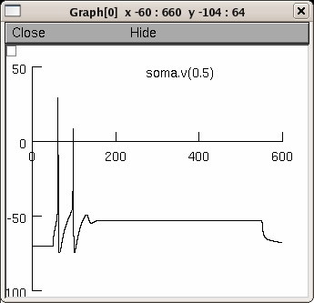

<pre>
This is the readme for the models associated with the paper:

Melnick IV, Santos SF, Safronov BV (2004)
Mechanism of spike frequency adaptation in substantia gelatinosa
neurones of rat. J Physiol 559:383-95 

Abstract: 
Using tight-seal recordings from rat spinal cord slices,
intracellular labelling and computer simulation, we analysed the 
mechanisms of spike frequency adaptation in substantia gelatinosa
(SG) neurones. Adapting-firing neurones (AFNs) generated short 
bursts of spikes during sustained depolarization and were mostly 
found in lateral SG. The firing pattern and the shape of single 
spikes did not change after substitution of Ca2+ with Co2+ , 
Mg2+ or Cd2+ indicating that Ca2+ -dependent conductances do not 
contribute to adapting firing.  Transient KA current was small
and completely inactivated at resting potential suggesting that 
adapting firing was mainly generated by voltage-gated Na+ and 
delayed-rectifier K+ (KDR ) currents. Although these currents
were similar to those previously described in tonic-firing
neurones (TFNs), we found that Na+ and KDR currents were smaller 
in AFNs. Discharge pattern in TFNs could be reversibly converted 
into that typical of AFNs in the presence of tetrodotoxin but not
tetraethylammonium, suggesting that lower Na+ conductance is more
critical for the appearance of firing adaptation. Intracellularly
labelled AFNs showed specific morphological features and
preserved long extensively branching axons, indicating that 
smaller Na+ conductance could not result from the axon cut. 
Computer simulation has further revealed that down-regulation of
Na+ conductance represents an effective mechanism for the
induction of firing adaptation. It is suggested that the 
cell-specific regulation of Na+ channel expression can be an 
important factor underlying the diversity of firing patterns in
SG neurones.

Although the current simulation does not exactly reproduce Figure
7 from the paper (for some unknown reason), the general result of
the paper is supported; the appearance of spike frequency
adaptation can be attributed to modulation of Na channels, either
through their overall expression (lessening Na channel max
conductance gbar_B_Na in the hillock of the model), or shifts in
either the activation or inactivation functions of Na channels 
throughout the neuron.

Figure 7:

Note the first and fourth columns in figure 7 shows tonic firing
with the other columns showing ways to find adaptive firing by
the changes mentioned above.

Sample explorations of the model:

Change gnabar_B_Na in the hillock window to the value 1.8 (S/cm2)
Press Init & Run
This demonstrates tonic firing.

Decreasing gnabar_B_Na to 0.73 then shows only a single spike is
generated.

Typing at the oc&gt; prompt
alpha_shift_B_Na = -3 
then restores the tonic firing.

Exploring the fifth column by setting gnabar_B_Na = 0.521 S/cm2
at the hillock and typing at the oc&gt; prompt
alpha_shift_B_Na = 5
beta_shift_B_Na = 11

and set the current (click the IClamp button and set amp =0.50)
Pressing Init & Run then generates a figure like



Additional note:
In all my models a temperature 6.3 corresponds to a room 
temperature of 22-24 C, and motoneuron model with 20.3 (6.3 + 14)
corresponds to 36-38 C.

-Boris Safronov

5/17/2017  Revised by N.T. Carnevale.  As noted by the senior author,
in the original implementation of this model assigning a value of 6.3 
to the parameter "celsius" corresponded to an actual operating temperature
of 23 deg C.  In this new revision of the model, the value assigned to 
celsius is identical to the operating temperature, i.e. a value of 23
means 23 deg C.  The motivation for the current revision is to facilitate 
future attributed reuse of this model and the mechanisms that it employs
by promoting conceptual clarity and making sure that this code "plays nicely"
with other models that involve temperature-dependent mechanisms.

</pre>
